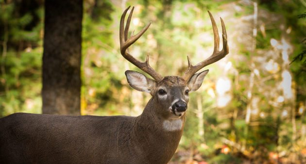

The Whitetail Deer: A North American Species
Whitetail deer are found in nearly all of North America, from Mexico to Canada spanning from the East coast to the West. Whitetail hunting has been a staple in North American culture for centuries, as they provide nutritious meat and useful pelts for early settlers. The male deer have antlers, which many hunters seek after for trophies after their harvest. They can range from 2 to even 12 points typically in a mature buck (pictured).
These deer are known for their strong sense of smell and weary nature. They are very smart animals. They can smell a human's scent downwind hundreds of yards away. This makes them very hard to hunt.
The hunting season opens every year in the fall, usually around September or October depending on the state law. The hunting season
is based on the breeding cycle of the species, which breed every year around December, again varying with the climate. The Quality Deer Management Association devotes time and
money to research these differences and help the species. Their mission: Since 1988, QDMA has worked to promote sustainable, high-quality deer populations, wildlife habitats and ethical hunting experiences through research, education, advocacy, and hunter recruitment.
The mating period is called the "rut," and
hunters take to the the woods to try and harvest a mature deer. Across the country, whitetail from each region of the country vary slightly in weight, pelt shade, and
antler type. For example a mature whitetail from Northern America will average 240 lbs, where a mature whitetail living in the warmer south will average only 200lb. These regions
can be basically divided into four zones in America:
| State | Zone | Average Weight of Mature Buck |
|---|---|---|
| Louisiana | Southern | 200 |
| Illinois | Midwest | 225 |
| Wyoming | Western | 230 |
Click here for the "Quality Deer Management Association" website to learn more!